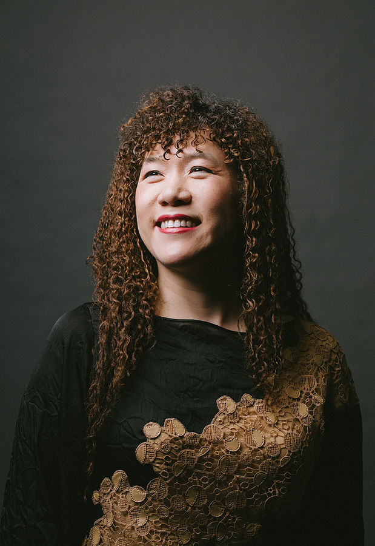

Stories of Women Entrepreneurs

Vandana Luthra, is an Indian entrepreneur and the founder of VLCC Health Care Ltd. A beauty and wellness conglomerate represented in Asia, the GCC and Africa. She was honoured by the Government of India in 2013 with the Padma Shri, the fourth highest civilian award, for her contribution to the fields of trade and industry. As of 2015, she is listed as the 33rd most powerful woman in business in India by Fortune India.
Vandana actively helps the underprivileged and the physically challenged by providing them scholarships for free education. She is Vice Chairperson of the NGO, Khushii, which has projects like telemedicine centres, a remedial school with midday meal facility catering to 3,000 children, and a vocational training facility.

Weili Dai is a Chinese-born American businesswoman. She is president and co-founder of Marvell Technology Group. Dai is considered one of the most successful women entrepreneurs, and is the only female co-founder of a major semiconductor company. As of 2015, she is listed as the 95th most powerful woman in the world by Forbes.

Cher Wang (15 September 1958) is a Taiwanese entrepreneur and philanthropist born in Taipei, Taiwan. As co-founder and chairperson (since 2007) of HTC Corporation (which manufactured one out of every six smartphones sold in the United States) and integrated chipset maker VIA Technologies. She is considered one of the most powerful and successful women in technology. Wang's father was Wang Yung-ching, founder of the plastics and petrochemicals conglomerate Formosa Plastics Group and one of the wealthiest individuals in Taiwan before his death in 2008.As of 2014, she is listed as the 54th most powerful woman in the world by Forbes.
 - Copy.jpg)
Kiran Mazumdar-Shaw (born 23 March 1953, Bangalore, India) is an Indian entrepreneur. She is the chairman and managing director of Biocon Limited, a biotechnology company based in Bangalore (Bengaluru), India and the current chairperson of IIM-Bangalore. In 2014, she was awarded the Othmer Gold Medal, for outstanding contributions to the progress of science and chemistry. She is on the Financial Times’ top 50 women in business list. As of 2015, she was listed as the 85th most powerful woman in the world by Forbes.
Oprah Gail Winfrey (born January 29, 1954) is an American media proprietor, talk show host, actress, producer, philanthropist and an entrepreneur. Harpo Productions (also referred to as Harpo Studios) is an incorporated US-based multimedia production company founded by Oprah Winfrey (the name "Harpo" is "Oprah" spelled backwards, and was the name of her on-screen husband in The Color Purple) and is the sole subsidiary of her media and entertainment company, Harpo, Inc. Harpo Production's subsidiaries consist solely of Harpo Print, LLC (the company's publishing house). One of its subsidiaries, Harpo Films (the company's film studio), was shut down in early 2013. Another, Harpo Radio (the company's radio broadcasting division), was shut down January 1, 2015 after satellite radio provider SiriusXM decided not to renew the deal with the radio service. The company also counts in its holdings 50% of the Oprah Winfrey Network (OWN) (the company's joint venture cable network with Discovery Communications). It was based in Chicago, and Harpo Studios (the company's TV production studio and corporate headquarters for Harpo Productions) was located in the Near West Side neighbourhood of Chicago until the studios closed in 2015. Harpo Productions and OWN are both currently based in West Hollywood, Los Angeles.